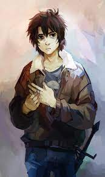

Percy Jackson
Percy is the Protagonist of the series. He is a half-blood son of Poseidon The Sea God. He has the powers of his father that include waterbending, the ability to breathe underwater and so on. He was found at a school by his Best Friend Grover Underwood a satyr. He also has a haflbrother named Tyson who is a cyclops. His prefered choice of weapon is a Sword named Anaklusmos (Riptide)
Annabeth Chase
Annabeth is a Half-Blood daughter of the goddess of war and wisdom, Athena. She is very intelligent and skilled at combat. She had run away from her house at the age of 7 and was found by Luke Castellan and Thalia Grace who took her in. Her prefered choice of weapon is her dagger, giver to her by Luke. Ghe also plays a great role in the fulfilling of the prophecy.
Grover Underwood

Grover is a satyr (half-human and half-goat). He is the bestfriend of Annabeth and Percy. He is very skilled at woodland magic and becomes a lord of the Wild after the Titan War. He is also the first satyr to find Pan the God of The Wild after 200 yrs.
Luke Castellan
Luke is the main Antagonist of the series. He is a son of Hermes and he left his home when he was 10. He believes that the Gods do not pay attention to their kids and so he decides to join the Titan Lord Kronos to destroy Olympus. He has served Host to Kronos's body to bring the end of Olympus. In the end he dies a hero as mentioned in the Prophecy.
Thalia Grace
Thalia is the daughter of Zeus. She also left her home when she was very young. She became best freinds with Annabeth and Luke. She died protecting them from a cyclops. She was turned into a tree by a father to preserve her.She came back to life and helped the demigods to prevent the destruction of Olympus. She soon after coming back to life, joins the Huntes of Artemis and thus becomes immortal.
Tyson
Clarisse La Rue
Charles Beckendorf
Silena Beauregard
Calypso
Calypso is the daughter of the Titan Atlas. After the first war between the gods and the titans, she is banished to an island called ogygia. She lives there completely alone. But every once in a while the gods send her company in the form of an injured demigod whom she cannot help but fall in love with.
Bianca de Angelo
Bianca is the daughter of Hades, the god of the Dead. She was born in the 1940s but due to great prophecy coming into effect, hades hid her and her brother at the Lotus Casino where time stands still. After coming out from there Bianca and her brother Nico are found by Grover at a military school. She is invited by Artemis to join the hunt which she accepts. Due to a quest gone wrong she loses her life but still watches out for her brother.
Nico de Angelo

Bianca is the daughter of Hades, the god of the Dead. She was born in the 1940s but due to great prophecy coming into effect, hades hid her and her brother at the Lotus Casino where time stands still. After coming out from there Bianca and her brother Nico are found by Grover at a military school. She is invited by Artemis to join the hunt which she accepts. Due to a quest gone wrong she loses her life but still watches out for her brother.